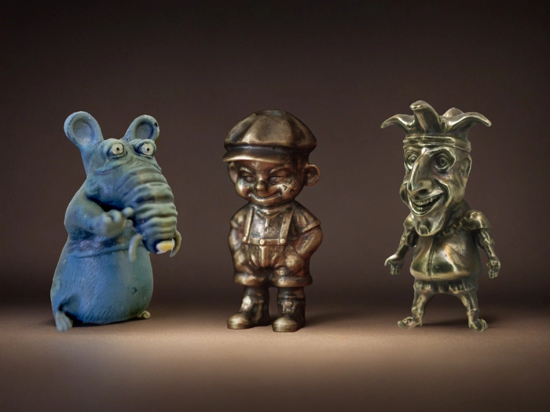
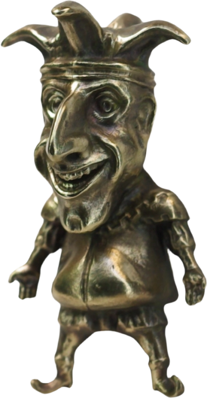

Коллекционирование темлячных бусин — это направление на стыке ножевой культуры, миниатюрной пластики и авторского декоративного искусства. Для одних это способ подобрать выразительную бусину на темляк или бусину для ножа, для других — самостоятельное увлечение, где важны редкость, авторство, техника исполнения и характер каждой модели.
Сегодня темлячная бусина может быть не просто элементом темляка для ножа, а полноценным коллекционным объектом: авторской миниатюрой, редкой работой мастера или частью небольшой серии, за которой интересно следить со временем.
Если вы только входите в тему, сначала полезно прочитать что такое темлячная бусина, затем посмотреть как выбрать темлячную бусину, а если вам важна практическая сторона — ещё и материал как сделать темляк для ножа.
Почему темлячные бусины коллекционируют
В отличие от массовых аксессуаров, авторские темлячные бусины часто имеют ярко выраженный образ, ограниченный тираж и узнаваемую манеру исполнения. Поэтому их собирают не только как функциональные элементы для ножа, но и как небольшие произведения прикладного искусства.
Для коллекционеров ценность обычно складывается из нескольких факторов: визуального образа, редкости, имени мастера, материала, качества проработки и эмоционального отклика.
Что делает темлячную бусину коллекционной
Редкость и тираж
Чем меньше экземпляров выпущено, тем выше интерес к модели. Штучные работы и небольшие серии почти всегда ценятся выше, чем массовое производство.
Автор и узнаваемый стиль
Для коллекционера важно не только само изделие, но и личность мастера. Со временем имя автора, его подход к образам и качество исполнения становятся частью ценности вещи.
Качество исполнения
Имеют значение детализация, чистота литья, глубина фактуры, аккуратность покраски, патинирование и финишная обработка. Чем сложнее техника и чище реализация, тем выше коллекционная привлекательность.
Образ, идея и характер

Сильнее всего запоминаются модели, в которых есть идея: персонаж, мифологический мотив, гротескный образ, настроение или отсылка к культуре, игре, фильму или исторической теме.
Для коллекции особенно интересны вещи, которые не выглядят случайным декором, а ощущаются как законченный образ со своим характером.
Какие материалы особенно ценятся
Коллекционные темлячные бусины делают из разных материалов, и каждый из них даёт свои ощущения от вещи.
- Латунь и другие металлы — ценятся за вес, долговечность и красивое старение поверхности;
- Металл с патиной — даёт более скульптурный и «живой» вид;
- Металл с ручной росписью — сочетает прочность основы и выразительность цвета;
- УФ-смола — позволяет делать яркие и очень детализированные модели;
- Комбинированные техники — особенно интересны коллекционерам за счёт необычной подачи.
Материал сам по себе не делает бусину ценной, но сильно влияет на восприятие, долговечность и общий характер изделия.
Как начать коллекцию темлячных бусин

Начинать лучше не с самых дорогих и редких моделей, а с понятного личного принципа отбора. Так коллекция получается цельной, а не случайной.
- Выберите направление: мифология, животные, персонажи, гротеск, минифигурки, авторские миниатюры;
- Определитесь с материалом: металл, патина, роспись, смола;
- Следите за автором: со временем это поможет лучше понимать ценность работ;
- Не покупайте только «потому что редкая»: сильная коллекция строится вокруг вкуса, а не только вокруг дефицита;
- Сохраняйте информацию: фото, дату покупки, историю модели и имя мастера.
Для первой коллекции лучше выбирать не просто дорогие вещи, а те модели, которые вам действительно хочется рассматривать, держать в руках и время от времени возвращать на темляк.
Нужно ли носить коллекционные бусины на темляке
Это зависит от вашего подхода. Одни коллекционеры носят любимые модели на ноже, как бусины на темляк или как элементы темляка для ножа, а другие предпочитают хранить редкие экземпляры отдельно.
Если вещь для вас в первую очередь коллекционная, логично бережнее относиться к окраске, патине и мелким деталям. Если же хочется использовать бусину по прямому назначению, лучше заранее понимать, как она будет вести себя на шнуре, паракорде и в ежедневном ношении.
Как хранить и показывать коллекцию
Со временем темлячные бусины перестают быть просто аксессуарами на ножах: их начинают хранить как самостоятельные миниатюры. Для этого подходят небольшие витрины, боксы с мягкими ячейками, планшеты для мелких предметов или просто аккуратные подставки.
При хранении полезно учитывать:
- защиту от лишней влаги;
- отсутствие жёсткого трения между изделиями;
- бережное отношение к окрашенным поверхностям;
- удобную систему учёта, если коллекция растёт.
Рынок авторских бусин и как выбирать модели
На рынке можно встретить и массовые изделия, и действительно авторские работы. Для коллекционера это принципиальная разница.
Авторская бусина обычно интереснее тем, что за ней стоит конкретный мастер, собственная идея, ручная доработка и часто ограниченный тираж.
При выборе стоит смотреть на:
- уровень проработки деталей;
- качество поверхности и покраски;
- цельность образа;
- понятность происхождения модели;
- то, насколько вещь действительно вызывает интерес лично у вас.
Темлячные бусины — это только для ножей?
Нет. Сегодня их используют не только на ножах, но и как брелоки, элементы для рюкзаков и сумок, небольшие настольные миниатюры и самостоятельные декоративные объекты.
Именно поэтому тема коллекционирования темлячных бусин развивается отдельно от чисто ножевого контекста, хотя для многих первая точка входа — это как раз нож, темляк и паракорд.
Где посмотреть авторские модели
Когда вы уже понимаете, какие образы, материалы и стили вам интересны, имеет смысл смотреть не только на фотографии, но и на то, как у конкретного мастера строится вся линейка изделий.
Примеры авторских моделей можно посмотреть в каталоге темлячных бусин.
Что делать дальше
Если этот материал уже разобран, дальше лучше перейти к ближайшим связанным темам — без длинного списка и лишних повторов.
Частые вопросы
С чего лучше начать коллекцию темлячных бусин?
Лучше начать с понятной вам темы: одного мастера, одного образного направления, одного материала или небольшой серии. Так коллекция будет выглядеть осмысленно, а не случайным набором вещей.
Обязательно ли хранить коллекционные бусины отдельно от ножа?
Нет. Многие носят их на темляке или на ноже, но редкие или деликатно окрашенные модели часто разумнее хранить отдельно, чтобы меньше травмировать поверхность.
Что делает бусину ценной для коллекционера?
Обычно важны редкость, автор, качество исполнения, материал, цельность образа и то впечатление, которое вещь производит лично на вас.
Можно ли собирать коллекцию и при этом использовать бусины по назначению?
Да. Для многих коллекция начинается именно с бусин на темляк и для ножа, которые сначала носят в повседневном использовании, а потом начинают отбирать уже осознанно.